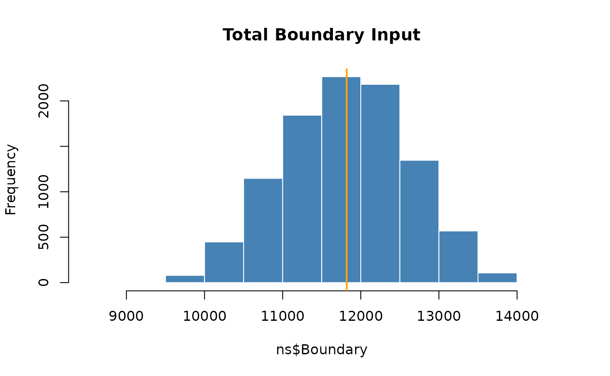
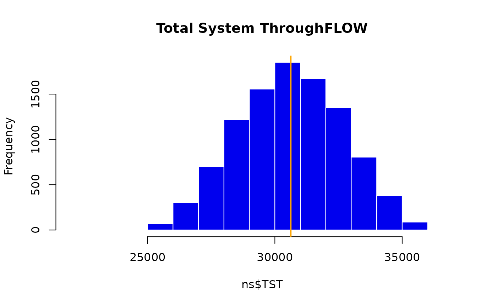

Uncertainty Analysis: Simplest Example
Source:vignettes/uncertainty_simple.Rmd
uncertainty_simple.RmdHere is an example of applying the ENA Uncertainty analysis using the simplest method – a constant percent error around each flow value
Load the model to analyze
data(troModels) # load the trophic ecosystem network models include in enaR
m <- troModels[[6]] # cone sping model (Kay et al. 1989; from Tilly)Next, lets set the Uncertainty Analysis parameters no.samples = 10000, the number of plausible models to return (number of samples) and f.error = 25 (flow parameters percent error to investigate)
Now we are ready to perform the ENA uncertainty analysis.
no.samples <- 10000
f.error = 25
m.uncertainty.list <- enaUncertainty(m, # original model
type = "percent", # type of uncertainty to use
p.err = f.error, # define percent error
iter = no.samples ) # specify the number of samples
#> Warning in lsei(E = E, F = F, G = G, H = H): No equalities - setting type = 2We can then apply selected ENA to the model set. Here we use the get.ns function to find the whole-network statistics for the models.
ns <- lapply(m.uncertainty.list, get.ns) # get ENA whole network statistics (metrics, indicators)
ns <- as.data.frame(do.call(rbind, ns)) # reshape data
ns.original <- as.data.frame(get.ns(m)) # find the original model results.We can now use these results. First, lets look at a histogram of the Boundary input values and the Total System throughflow values. This code generates an orange vertical line on the histogram indicating the indicator value in the original model.
hist(ns$Boundary, col = "steelblue", border = "white", main = "Total Boundary Input")
abline(v = ns.original$Boundary, col = "orange", lwd = 2)
hist(ns$TST, col = "blue2", border = "white", main = "Total System ThroughFLOW")
abline(v = ns.original$TST, col = "orange", lwd = 2)
Beyond visualizing the effects of the model flow parameter uncertainty on the ENA results, we can use the 95% CI to make statisitcal inferences. Here, we consider the hypothesized “dominance of indirect effects” (Higashi and Patten 1991, Salas and Borrett 2010, Borrett et al. 2016), and “network homogenization” (Fath and Patten 1999, Borrett and Salas 2010, Borrett et al. 2016) in ecosystems. To do this, we first find the 95% confidence intervals for each network metric:
id.95ci <- quantile(ns$ID.F, probs = c(0.025, 0.975))
hmg.95ci <- quantile(ns$HMG.O, probs = c(0.025, 0.975))
We then construct a bar plot of the calculated values for the original model and add the 95% CI error bars from Uncertainty Analysis
opar <- par(las = 1)
bp <- barplot(c(ns.original$ID.F, ns.original$HMG.O),
ylim = c(0,3),
col = "grey",
border = NA,
names.arg = c("Indirect/Direct", "Homogenization"))
abline(h = 1, col = "orange", lwd = 1.5) # threshold value
arrows(bp, c(id.95ci[1], hmg.95ci[1]),
bp, c(id.95ci[2], hmg.95ci[2]),
code = 3, lwd = 1.5, angle = 90, length = 0.2, col = "black")The results show that the orignial value of the Indirect-to-Direct flows ratio is larger than one, indicating the “dominance of indirect effects”; however, the 95% confidence interval for this indicator with a 25% uniform uncertainty spans the threshold value of 1 (ranging from 0.9 to 1.16). Thus, we are not confident that this parameter exceeds the interpretation threshold given this level of uncertainty. In contast, the network homogenizaiton pameter exceeds the interpretation threshold of 1.0, and the 95% CI for our level of uncertainty suggests that we are confident that this interpretation is correct.